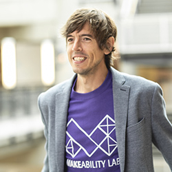
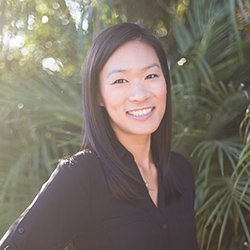
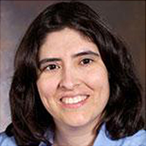
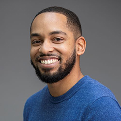

ASSETS 2022
The 24th International ACM SIGACCESS Conference on Computers and Accessibility
Athens, Greece
October 23-26, 2022
Aug 5, 2022 | Registration Now Open!
You can now register for the ASSETS'22 conference and workshops on the CVENT Registration Site. See the Registration and Attending Overview pages for more information. For room bookings at Hotel Titania, see the Attending in Athens page.
Welcome üëã,
Acknowledging the impact the pandemic has had on all of us and the transformation in how people access and expect to access information and interact together, ASSETS’22 will be the first-ever “hybrid” conference in its 24 years. During the conference dates (Oct 24-26), we will host a full, on-site conference experience in Athens, Greece and a complementary, lighter-weight virtual experience online. ASSETS'22 also introduces our first-ever workshop track, which will take place Oct 23 and is intended to further grow and diversify our community and foster additional scholarship and discussion.
Shifting to a hybrid format brings forth new opportunities and challenges in making conferences accessible, building community, and broadening participation. We currently do not plan on live streaming content but will, instead, provide prerecorded videos of talks with captions as well as opportunities for virtual and on-site attendees to interact via online tools. At least one author of accepted technical papers, posters and demonstrations, or other artifact-based tracks is expected to travel to Athens to present their work. Other co-authors can choose to attend on-site or virtually.
We want to have you and your accessibility work at ASSETS! If you have a disability or health concern that prevents travel, please contact assets22-leadership@acm.org to discuss accommodations.
On behalf of the organizing committee,
Jon E. Froehlich, General Chair
Kristen Shinohara and Stephanie Ludi, Technical Program
Chairs
Christian Vogler, Hybrid Experiences Chair
The ASSETS conference is the premier forum for presenting research on the design, evaluation, use, and education related to computing for people with disabilities and older adults. For those in Europe and Oceania, ASSETS is rated as Core A —a designation for the top academic conferences that are "highly respected in a discipline area" (Core A; Top 16%).
We invite high-quality original submissions on topics relevant to computing and accessibility. All contributions are peer-reviewed by an international Program Committee. Accepted papers and the abstracts for posters and demonstrations, experience reports, and the student research competition will be archived in the ACM Digital Library. Authors of selected papers will be invited to submit extended versions of their papers to a special issue of the ACM Transactions on Accessible Computing (TACCESS).
Venue and Dates
ASSETS 2022 will be held at the newly renovated Hotel Titania from Sun, Oct 23 to Wed, Oct 26 in Athens, Greece with a complementary, lightweight virtual option online. See the Attending Overview page for details.
Learn more about the venue and links to register and book a hotel room on our Attending in Athens webpage.
Important Dates
Tuesday, February 15, 2022 - Mentoring request deadlineThursday, April 14, 2022 - Technical Paper submission deadlineSaturday, May 28, 2022 - Initial Technical Paper reviews sent to authors, rebuttal phase opensSunday, June 5, 2022 - Rebuttal phase closesThursday, June 16, 2022 - Technical Paper acceptance decisions sent to authorsThursday, June 23, 2022 - Student Volunteer deadlineThursday, June 23, 2022 - Submission deadline for:- Posters
- Demonstrations
- Experience Reports
- Workshop Proposals
Thursday, July 7, 2022 - Final versions of accepted papers due. Following this deadline, authors will receive instructions for completing their eRights forms, validating and submitting their paper to TAPS, and submitting their final accessible pdf.Monday, July 11, 2022 - Submission deadline for Doctoral ConsortiumFriday, July 15, 2022 - Acceptance decisions for:- Posters
- Demonstrations
- Doctoral Consortium
- Experience Reports
- Workshop Proposals
Friday, July 29, 2022 - Final versions of accepted Posters, Demonstrations, Experience Reports, and Workshop papers due. Following this deadline, authors will receive instructions for completing their eRights forms, validating and submitting their paper to TAPS, and submitting their final accessible pdf.Monday, August 1, 2022 - Technical paper video presentations due (5-7 minutes for in-person presenters, up to 10 minutes for virtual presenters)Monday, August 15, 2022 - Video presentations due for Posters, Demonstrations, Experience Reports, and Doctoral ConsortiumFriday, August 19, 2022 - Submission deadline for Student Research Competition- Friday, September 2, 2022 - Acceptance decisions for Student Research Competition
- Friday, September 9, 2022 - Final version of accepted Student Research Competition due
- Friday, September 16, 2022 - Video presentations due for Student Research Competition
Committees
General Chair

Jon E. Froehlich, University of Washington, USA
generalchair-assets22@acm.org
Technical Program Chairs

Kristen Shinohara, Rochester Institute of Technology, USA
tpc-assets22@acm.org

Stephanie Ludi, University of North Texas, USA
tpc-assets22@acm.org
Treasurer and Registration Chairs

Kyle Rector, University of Iowa, USA
treasurer-assets22@acm.org

Martez Mott, Microsoft Research, USA
treasurer-assets22@acm.org
Please visit the Organizing Committee page to see the entire list.
Champion Sponsors
See all sponsors on our Sponsors page. Thank you sponsors!


Become a Sponsor
The ASSETS 2022 conference committee welcomes organizations and companies interested in reaching our prominent accessibility researchers, practitioners, developers, and policy-makers. Check Become a Sponsor for more detail.